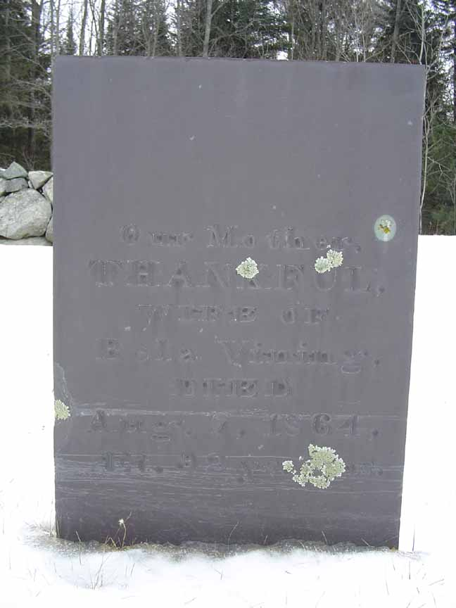
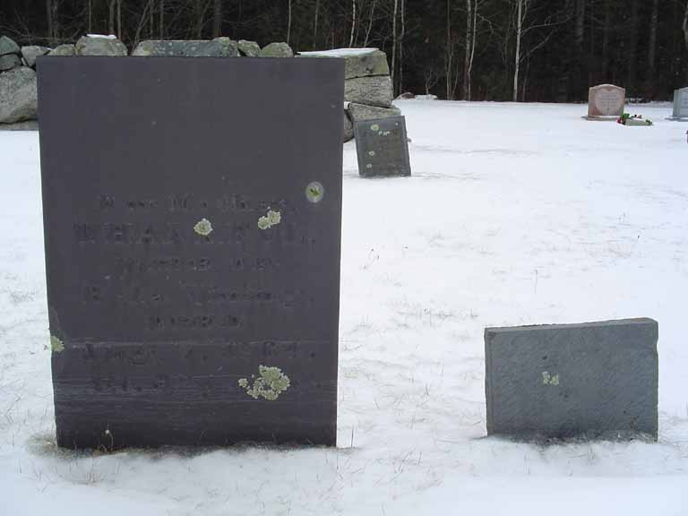

Family Data
The town of Durham, Androscoggin County, Maine, has photocopied its vital record books, and those photocopies are available for public viewing. Unfortunately, much of the photocopied material is very difficult to impossible to read. Below is the page (greatly enlarged) recording the "family Record" of Bela Vining (minus his wife).
Census Data
| 1800 | 1810 | 1820 | 1830 | 1840 | 1850 | |
| Bela Vining | M 26–45 | M 45 and over [although he was 44] | M 45 and over | M 60–70 | M 70–80 | dead |
| Thankful (Millbanks) Vining | F 26–45 | F 26–45 | F 45 and older | [see note below] | F 60–70 | 87 [see note below] |
| William Vining | M under 10 | M 16–26 | married and living in separate household | |||
| Hannah Vining | F under 10 | F 16–26 | married and living in separate household | |||
| Ammi Vining | M under 10 | [see note below] | married and living in separate household | |||
| Lucy Vining | F under 10 | F 10–16 | [see note below] | married and living in separate household | ||
| Bela Vining Jr. | M under 10 | M under 10 [although he was 10] | M 16–26 | dead | ||
| Samuel Vining | M under 10 | M 16–26 | [see note below] | |||
| Sarah S. Vining | F under 10 | F 10–16 | married and living in separate household | |||
| Sewall Vining | M under 10 | M 10–16 | [see note below] | married and living in separate household | ||
| Mary Millbanks Vining | F under 10 | [see note below] | [see note below] | married and living in separate household |


Death Data
Gravestones of Thankful (Millbanks) Vining, and both Thankful and Bela Vining. The inscription on Bela Vining's stone (the right hand stone of the pair) is mostly below ground.
